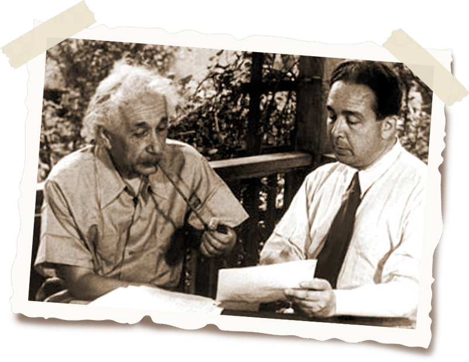
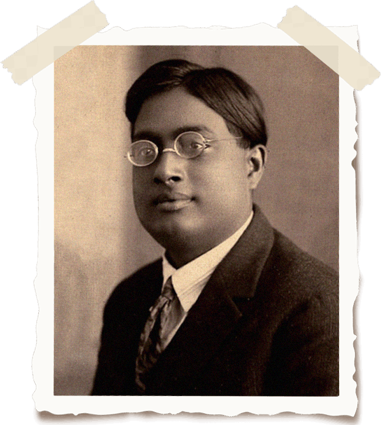

In the history of modern astronomy, there is probably no one greater leap forward than the building and launch of the space telescope.


Альберт Эйнштейн в детстве
Родился 14 марта 1879 года в Ульме (Германия).
В 1894 году Эйнштейны переехали в итальянскую Павию.
В 1896 году окончил среднюю школу в Арау в Швейцарии, затем был принят в Цюрихский Политехникум.
В 1900 году получил диплом преподавателя математики и физики.
С 1901 года являлся гражданином Швейцарии.
С 1902 года работал экспертом в Федеральном Бюро патентования изобретений, поскольку не смог получить место преподавателя.
В 1903 году женился на Милеве Марич, математике по профессии, сербке, происходящей из Воеводины. У них родилось трое детей: девочка и два мальчика.
В 1905 году Эйнштейн отправил 4 научные статьи в журнал „Анналы физики”, каждая из которых оказалась эпохальным событием (см. ниже).
В 1909 году был приглашён в Цюрихский университет на должность профессора, и, начиная с этого момента, приглашения на профессорскую должность поступали от различных университетов (напр., Прага, Берлин).
В 1919 году развёлся с первой супругой и женился на кузине Эльзе Лёвенталь, общих детей у них не было.
В 1921 году Эйнштейну была присуждена Нобелевская премия за теорию фотоэффекта.
В декабре 1932 года Эйнштейн решается переселиться в США из-за нарастающей экспансии нацизма в гитлеровской Германии.
В августе 1939 года по инициативе Лео Силарда посылает письмо президенту США, в котором просит ускорить применение атомной энергии в военных целях.
В 1952 году от израильского правительства поступает предложение стать вторым президентом государства Израиль, но Эйнштейн его отклоняет.
В последние годы жизни Эйнштейн работает над созданием единой теории поля, пытаясь объединить гравитацию, электромагнетизм и квантовую механику в Единую теорию, но этого до сегодняшнего дня не удалось никому.
18 апреля 1955 года Альберт Эйнштейн скончался в больнице Принстона.

Упорно поддерживается миф о том, что ещё в школе Эйнштейн провалил экзамен по математике. Вероятно, основанием этому послужило то, что он посещал среднюю школу не в одной стране. Эйнштейн начал ходить в школу в Германии, где наивысшим баллом являлась 1, а завершил в Швейцарии, где наивысшей оценкой по шестибальной шкале было 6 баллов. Поскольку чередовались баллы 6 и 1, поэтому при беглом осмотре казалось, что Эйнштейн провалил экзамен по математике.
Упорно поддерживается миф о том, что ещё в школе Эйнштейн провалил экзамен по математике. Вероятно, основанием этому послужило то, что он посещал среднюю школу не в одной стране. Эйнштейн начал ходить в школу в Германии, где наивысшим баллом являлась 1, а завершил в Швейцарии, где наивысшей оценкой по шестибальной шкале было 6 баллов. Поскольку чередовались баллы 6 и 1, поэтому при беглом осмотре казалось, что Эйнштейн провалил экзамен по математике.
Фотографом был Артур Сасс, представлявший информагентство „Юнайтед Пресс” (United Press). Снимок фотографа Артура Сасса был сделан практически случайно после вечеринки в честь 72-летия Эйнштейна. Сасс подошел к физику, когда тот уже сел в машину, и попросил его попозировать. Наибольшую известность получил обрезанный вариант снимка, где виден только Эйнштейн. Сам Альберт Эйнштейн высоко оценил фотографию Сасса, заказал большое количество копий и, впоследствии, вкладывал их в поздравительные открытки.

В 1921 году Эйнштейн получил Нобелевскую премию по физике за создание теории фотоэффекта. (Однако он не был удостоен Нобелевской премии за разработку теории относительности, которая в то время была ещё слишком спорной.)
Об этом будет подробно сказано во второй части урока.
Эйнштейн не был учёным-одиночкой. Многие из его теорий были основаны на работах предшественников, и также его теории были подхвачены и развиты в дальнейшем другими. Эйнштейн искренне почитал многих учёных и других публичных личностей.
Эйнштейн и Лео Силард, участвовавший в исследованиях цепных ядерных реакций, стали авторами знаменитого письма президенту Рузвельту о важности разработок по созданию ядерного оружия.
Эйнштейн был большим почитателем индийского физика Сатьендры Ната Бозе, с кем совместно обосновал теорию существования конденсата Бозе–Эйнштейна – агрегатного состояния газов, охлаждённых до температур, близких к абсолютному нулю. (Хотя они и встречались лично, но совместного фото не осталось.)
